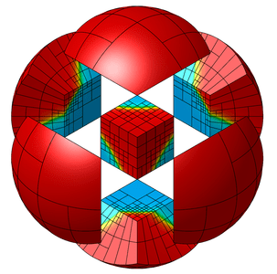

MFEM Community Workshop
October 26, 2023
Virtual Meeting
Speakers' slides are linked in the agenda below. Read the article about the workshop on LLNL's Computing website. Watch the video playlist of workshop presentations (linked individually below and available on the videos page), and view contest submissions in the gallery.

Overview
The MFEM team is happy to announce the third MFEM Community Workshop, which will take place on October 26, 2023, virtually, using Zoom for videoconferencing. The goal of the workshop is to foster collaboration among all MFEM users and developers, share the latest MFEM features with the broader community, deepen application engagements, and solicit feedback to guide future development directions for the project.
For questions, please contact the meeting organizers at mfem@llnl.gov.
Registration
Registration closed on October 19th.
Meeting format
Depending on the interest and user feedback, the meeting will include the following elements:
- Project news and development updates from the MFEM team
- An overview of the latest features in MFEM-4.5, MFEM-4.5.2 and MFEM-4.6
- Contributed talks from application developers utilizing MFEM
- Roadmap discussion for future development
See also the agenda for the previous 2022 and 2021 MFEM workshops.
Workshop participants are encouraged to join the MFEM Community Slack workspace to communicate with other MFEM users and developers before, during and after the MFEM workshop.
Agenda
The meeting activities will take place 8:00am-4:00pm Pacific Daylight Time (GMT-7):
Thursday, October 26
| Time | Activity | Presenter |
|---|---|---|
| 8:00-8:20 | Welcome & Overview (PDF, video) | Aaron Fisher (LLNL) |
| 8:20-8:40 | The State of MFEM (PDF, video) | Tzanio Kolev (LLNL) |
| 8:40-9:00 | Recent Developments (PDF, video) | Veselin Dobrev (LLNL) |
| 9:00-9:20 | Break | Discussions on Slack |
| 9:20-10:20 | Session I (20 mins each) Chair: Will Pazner |
Sebastian Grimberg (Amazon Web Services) Palace: PArallel LArge-scale Computational Electromagnetics (PDF, video)Palace, for PArallel, LArge-scale Computational Electromagnetics, is a parallel finite element code for full-wave electromagnetics simulations based on the MFEM library. Palace is used at the AWS Center for Quantum Computing to perform large-scale 3D simulations of complex electromagnetics models and enable the design of quantum computing hardware. In this talk we will give an overview of the simulation capabilities of Palace as well as some recent developments for conforming and nonconforming adaptive mesh refinement, operator partial assembly, and GPU support.Jacob Lotz (Delft University of Technology) Computation and Reduced Order Modelling of Periodic Flows (PDF, video)Many types of periodic flows can be found in nature and industrial applications and their computation is expensive due to lengthy time simulations. Our work aims to reduce the cost of these computations. We solve periodic flows in a space-time domain in which both ends in time are periodic such that we only have to model one period. MFEM is used to discretise the space-time domain and solve our discretised system of equations. We apply a hyper-reduced Proper Orthogonal Decomposition Galerkin reduced order model to speed up our computations. During the presentation we show (results of) our full order model and our advances in de reduced order modelling.Boyan Lazarov (LLNL) Scalable Design and Optimization with MFEM (PDF, video)The talk aims to present recently added and ongoing code development facilitating the solution of shape and topology optimization problems. Both topology and shape optimization are gradient-based iterative algorithms aiming to find a material distribution that minimizes an objective and fulfills a set of constraints. Every optimization step includes a solution to a forward optimization problem, an evaluation of the objective and constraints, a solution to an adjoint problem associated with every objective or constraint, an evaluation of gradients, and an update of the design based on mathematical programming techniques. All these steps can be easily implemented and executed by using MFEM in a scalable manner, allowing the design and optimization of large-scale realistic industrial problems. Thus, the goal is to exemplify these features, highlight the techniques that simplify the implementation of new problems, and provide a glimpse into the future. |
| 10:20-10:40 | Break & Group Photo | Download a virtual background below |
| 10:40-11:40 | Session II (5 mins each) Chair: Milan Holec |
Student Lightning Talks Part 1 (video) Shani Martinez Weissberg (Tel Aviv University) µFEA of a Rabbit Femur (PDF)Given the ethical and practical limitations of conducting preliminary medical studies on humans, New Zealand White (NZW) rabbits serve as a common model for treatment validation. An important such medical study is the prediction of the risk of fracture in femurs with metastatic bone tumors following radiation therapy and image-based treatment. For such studies, micro-computed tomography (µCT) scans of NZW rabbit femurs are essential for capturing the detailed bone architecture. These µCT scans are used to construct micro finite element models (µFEMs) of the femurs that are being virtually loaded to predict the mechanical response required for validation of the µFEMs via experiments on fresh frozen rabbit femurs. This presentation outlines the step-by-step process of creating patient-specific µFEMs of rabbit femurs using MFEM. The workflow spans from µCT imaging to segmentation and 3D reconstruction, culminating in the MFEM solution of a linear elastic problem with over 125 million degrees of freedom.Paul Moujaes (TU-Dortmund) Dissipation-Based Entropy Stabilization for Slope-Limited Discontinuous Galerkin Approximations of Hyperbolic Problems (PDF)Dissipation-based entropy stabilization for slope-limited DG-approximations of hyperbolic problems with focus on the Euler equations.Alejandro Muñoz (Universidad de Granada) Discontinuous Galerkin in the Time Domain for Maxwell’s Equations (PDF)The Discontinuous Galerkin method is a type of finite element method which uses discontinuous basis functions, almost always piecewise polynomials. Through the use of MFEM, we aim to implement an explicit scheme Maxwell Equations' solver capable of 1D, 2D and 3D problem solving. Thanks to the library's capabilities, we can focus on the implementation of operators and integrators while retaining the capacity to use multiple types of meshes with various element types and the posterior visualization through GLVIS or ParaView.Bill Ellis (UKAEA) Comparing Thermo-Mechanical Solves in MOOSE and MFEM (PDF)Fusion energy requires confinement of a very hot plasma. Given these high temperatures, it is necessary to model how materials and components react in these environments. The Multiphysics Object-Oriented Simulation Environment (MOOSE) offers functionality to model the mechanical effects of these temperature fields. As MFEM is increasingly utilised for electromagnetic modelling in fusion, interest as to the benefits of a purely MFEM workflow have arisen. This short talk aims to offer a comparison of the performance and stability of some thermal expansion problems in MFEM and MOOSE by modelling some fusion relevant components.Student Lightning Talks Part 2 (video) Alexander Mote (Oregon State University) A Neural Network Surrogate Model for Nonlocal Thermal Flux Calculations (PDF)Mathematically, a neural network can produce a prediction of thermal flux in a plasma physics simulation as much as 1,000,000 times faster than it would take to calculate computationally. Using a dataset of MFEM simulations, we were able to train a neural network to predict nonlocal thermal flux within a 1D2V ICF simulation with 99.3% accuracy. This model was then used to evolve temperature over time in a similar simulation setup, demonstrating accurate nonlocal heat transport properties useful to experimenters.Amit Rotem (Virginia Tech) GPU Acceleration of IPDG in MFEM (PDF)This talk will present the new partial assembly implementation of the DGDiffusion bilinear form integrator. The partial assembly implementation uses sum factorization and can be compiled with CUDA to gain a substantial speed up. In the second half of the talk, an example solving the Wave Equation will be presented.Josiah Brown (Relogic Research) Project Minerva (PDF)MFEM is a very fast solver for structural problems due to it being efficiently made and its parallel capability, but due to it being for the most part strictly a C++ library that is used by programming a C++ script, it can be difficult to make a structural mesh. Material solver like Abacus, thought slow in solving for a solution, has many visual aids in creating a structural mesh making it very user friendly. Relogic has created a C++ code that takes Abacus input data, parsers it, generates a mesh file, and then runs MFEM on this data. This program allows one to create a structural mesh in Abacus and solve it in MFEM, this was done in hopes of making MFEM more user friendly and accessible.Mike Pozulp (UC Berkeley) An Implicit Monte Carlo Acceleration Scheme (PDF)This is a joint research project with Terry Haut to use Monte Carlo to compute a linear form arising in one of Sam Olivier's DG discretizations of radiation diffusion that Olivier described in his PhD thesis and implemented using MFEM. We are investigating the impact of the Monte Carlo noise on the radiation diffusion solution quality. |
| 11:40-12:00 | Break | Discussions on Slack |
| 12:00-1:00 | Session III (20 mins each) Chair: Tzanio Kolev |
Syun'ichi Shiraiwa (PPPL) Radio-Frequency Wave Simulation in Hot Magnetized Plasma using Differential Operator for Non-Local Conductivity Response (PDF, video)In high-temperature plasmas, the dielectric response to the RF fields is caused by freely moving charged particles, which naturally makes such a response non-local and correspondingly, the Maxwell wave problem becomes an integro-differential equation. A differential form of dielectric operator, based on the small k⊥ρ expansion, is widely used. However, they typically includes up-to the second order terms, and thus the use of such an operator is limited to the waves that satisfy k⊥ρ < 1. We propose an alternative approach to construct a dielectric operator, which includes all-order finite Larmor radius effects without explicitly containing higher order derivatives. We use a rational approximation of the plasma dielectric tensor in the wave number space, in order to yield a differential operator acting on the dielectric current (J). The 1D O-X-B mode-conversion of the electron Bernstein wave in the non-relativistic Maxwellian plasma was modeled using this approach. An agreement with analytic calculation and the conservation of wave energy carried by the Poynting flux and electron thermal motion (“sloshing”) is found. The connection between our construction method and superposition of Green’s function for these screened Poisson’s equations is presented. An approach to extend the operator in a multi-dimensional setting will also be discussed.Tamas Horvath (Oakland University) Implementation of Hybridizable Discontinuous Galerkin Methods via the HDG Branch (PDF, video)In this talk, we present the HDG branch, which was initially developed for HDG discretizations of advection-diffusion problems. Recent updates have made the branch highly adaptable for various applications, allowing a flexible implementation of HDG for many different PDEs. We showcase these enhancements and provide insights into their versatile usage across different problems.Yohann Dudouit (LLNL) Empowering MFEM Using libCEED: Features and Performance Analysis (PDF, video)This presentation will begin with an overview of the features introduced to MFEM through the integration of libCEED. We will particularly emphasize capabilities that are distinct from native MFEM functionalities, marking an enhancement in the software's suite of tools, such as support for simplices, handling of mixed meshes, and support for p-adaptivity. The presentation will conclude by showcasing benchmarks for various problems executed on different HPC architectures, illustrating the performance gains and efficiencies achieved through the libCEED integration. |
| 1:00-1:20 | Break | Discussions on Slack |
| 1:20-2:20 | Session IV (20 mins each) Chair: Ketan Mittal |
Zhang Chunyu (Sun Yat-Sen University) Homogenized Energy Theory for Solution of Elasticity Problems with Consideration of Higher-Order Microscopic Deformations (PDF, video)The classical continuum mechanics faces difficulties in solving problems involving highly inhomogeneous deformations. The proposed theory investigates the impact of high-order microscopic deformation on modeling of material behaviors and provides a refined interpretation of strain gradients through the averaged strain energy density. Only one scale parameter, i.e., the size of the Representative Volume Element(RVE), is required by the proposed theory. By employing the variational approach and the Augmented Lagrangian Method(ALM), the governing equations for deformation as well as the numerical solution procedure are derived. It is demonstrated that the homogenized energy theory offers plausible explanations and reasonable predictions for the problems yet unsolved by the classical theory such as the size effect of deformation and the stress singularity at the crack tip. The concept of averaged strain energy proves to be more suitable for describing the intricate mechanical behavior of materials. And high order partial differential equations can be effectively solved by the ALM by introducing supplementary variables to lower the highest order of the equations.Eric Chin (LLNL) Contact Constraint Enforcement Using the Tribol Interface Physics Library (PDF, video)In this talk, we will discuss recent additions to the Tribol interface physics library to simplify MPI parallel contact constraint enforcement in large deformation, implicit and explicit continuum solid mechanics simulations using MFEM. Tribol is an open-source software package available on GitHub (https://github.com/LLNL/Tribol) and includes tools for contact detection, state-of-the-art Lagrangian contact methods such as common plane and mortar, and various enforcement techniques such as penalty and Lagrange multiplier. Additionally, Tribol recently added a domain redecomposer for coalescing proximal contact pairs on a single rank. Tribol’s features are designed to interact seamlessly with MFEM, and other codes that use MFEM, with native support for MFEM data structures such as ParMesh, ParGridFunction, and HypreParMatrix. We highlight the simplicity of adding Tribol features to an MFEM-based code by looking at integration with Serac: an open-source implicit nonlinear thermal-structural simulation code (https://github.com/LLNL/serac).Milan Holec (LLNL) Deterministic Transport MFEM-Miniapp: Advancing Fidelity of Fusion Energy Simulations (PDF, video)We introduce a new multi-dimensional discretization in MFEM enabling efficient high-order phase-space simulations of various types of Boltzmann transport. In terms of a generalized form of the standard discrete ordinate SN method for the phase-space, we carefully design discrete analogs obeying important continuous properties such as conservation of energy, preservation of positivity, preservation of the diffusion limit of transport, preservation of symmetry leading to rays-effect mitigation, and other laws of physics. Finally, we show how to apply this new phase-space MFEM feature to increase the fidelity of modeling of fusion energy experiments. |
| 2:20-2:40 | Break | Discussions on Slack |
| 2:40-3:00 | Wrap-up & Contest Winners (PDF, video) | Aaron Fisher (LLNL) |
| 3:00-4:00 | Q&A Session | MFEM team available on Zoom + Slack |
Simulation and Visualization Contest
We will be holding a simulation and visualization contest open to all attendees. Participants can submit visualizations (images or videos) from MFEM-related simulations. The winner of the competition (selected by the organizing committee) will receive an MFEM T-shirt. We will also feature the images in the gallery. Here are the winners from the 2022 workshop:


To submit an entry in the contest, please fill out the Google form.
Alternatively, you may email your submission to mfem@llnl.gov, including your name, institution, a short description of the simulation (the underlying physics, discretization, application details, etc.), and visualization software used (GLVis, ParaView, VisIt, etc.).
Virtual Backgrounds
We invite workshop participants to use the virtual backgrounds designed for this event. Click each image to enlarge, then right-click to save locally.


{kind=link}

Organizing Committee
Holly Auten ┊ Aaron Fisher ┊ Milan Holec ┊ Tzanio Kolev ┊ Ketan Mittal ┊ Will Pazner ┊ Socratis Petrides ┊ Vladimir Tomov